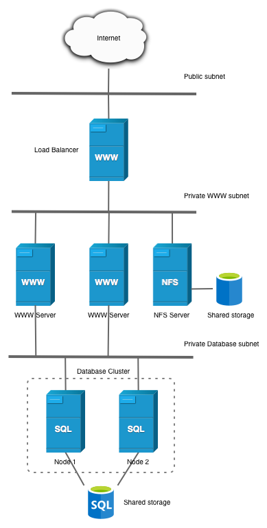

Practica-3.2-IAW#
Despliegue de Wordpress en tres niveles mediante Ansible#
En esta práctica vamos a realizar un despliegue de un sitio de moodle siguiendo la misma pauta de la práctica 11, una infraestructura a tres niveles (balanceador de carga, frontend y backend) en máquinas diferentes siguiendo el siguiente esquema.

En este esquema, el balanceador de carga tendrá un certificado Let's Encrypt, las máquinas de frontend tienen el directorio /var/www/html de apache2, compartido por una máquina nfs_server y al final una máquina backend (no dos como en la imagen) con el servicio de MySQL.
Explicación del repositorio#
Este repositorio tiene todo lo necesario para el lanzamiento de este sitio CMS (Content Manager System), en este caso WordPress. La estructura global de nuestro repo será la siguiente:

- El inventory, será el archivo donde colocamos las diferentes ip de las máquinas que pertenecen a nuestros grupos.

Las últimas líneas se alude a las claves ssh que deben estar en la máquina para el funcionamiento de Ansible.
-
exports, el archivo que especifica el comportamiento del directorio a compartir (irá en la máquina nfs_server).
/var/www/html FRONTEND_NETWORK(rw,sync,no_root_squash,no_subtree_check) -
Los playbooks, serán los diferentes "libros de jugadas" donde se colocan lás tareas que se ejecutan. Aquí tendremos:
-
install_lamp_backend.yaml
Instalación de los paquetes de LAMP de Backend: MySQL. -
install_lamp_frontend.yaml
Instalación de los paquetes de LAMP de Frontend: Apache2 y PHP.
-
setup_load_balancer.yaml
Instalación de las dependecias del balanceador de carga.
-
setup_nfs_server.yaml
Instalación de las dependencias del servidor NFS.
-
setup_nfs_client.yaml
Instalación de las dependecias para montar el volumen /var/www/html en las máquinas frontend.
-
setup_letsencrypt_certificate.yaml
Instalación y petición de certificado Let's Encrypt para la máquina balanceador de carga.
-
deploy_wordpress_backend.yaml
Instalación de dependencias de backend de WP: bases de datos.
-
deploy_wordpress_frontend.yaml
Instalación de dependencias de frontend de WP: instalación de CLI, plugins, y reescritura de permalinks.
-
Instalación de scripts#
El núcleo fuerte del repositorio será la instalación de wordpress, para ello una vez tenemos la Pila LAMP instalada e instalamos el Let's Encrypt veremos como funciona el NFS Client y Server.
- Servidor NFS
---
- name: Configurar servidor NFS
hosts: nfs_server
become: yes
vars_files:
- ../vars/variables.yaml
tasks:
- name: Actualizar el repositorio de paquetes
apt:
update_cache: yes
- name: Actualizar paquetes del sistema
apt:
upgrade: dist
autoremove: yes
- name: Instalar el servidor NFS
apt:
name: nfs-kernel-server
state: present
- name: Crear el directorio compartido
file:
path: /var/www/html
state: directory
owner: nobody
group: nogroup
mode: '0775'
- name: Copiar configuración de exportación NFS
copy:
src: ../nfs/exports
dest: /etc/exports
owner: root
group: root
mode: '0644'
- name: Configurar la red de exportación en /etc/exports
replace:
path: /etc/exports
regexp: 'FRONTEND_NETWORK'
replace: "{{ ip.net }}"
- name: Reiniciar el servicio NFS
systemd:
name: nfs-kernel-server
state: restarted
enabled: yes
---
- name: Configurar cliente NFS en servidores frontend
hosts: frontend
become: yes
vars_files:
- ../vars/variables.yaml
tasks:
- name: Actualizar el repositorio de paquetes
apt:
update_cache: yes
- name: Actualizar paquetes del sistema
apt:
upgrade: dist
autoremove: yes
- name: Instalar el cliente NFS
apt:
name: nfs-common
state: present
- name: Crear el punto de montaje para NFS
file:
path: /var/www/html
state: directory
owner: www-data
group: www-data
mode: '0755'
- name: Montar el sistema de archivos NFS temporalmente
command: mount {{ ip.nfsserver }}:/var/www/html /var/www/html
args:
creates: /var/www/html/index.php # Verifica que el montaje no se repita
- name: Crear copia de seguridad de /etc/fstab
copy:
src: /etc/fstab
dest: /etc/fstab.bak
remote_src: yes
mode: '0644'
- name: Agregar la configuración de montaje de NFS a /etc/fstab
lineinfile:
path: /etc/fstab
insertafter: 'UEFI'
line: "{{ ip.nfsserver }}:/var/www/html /var/www/html nfs rsize=8192,wsize=8192,timeo=14,intr,noexec,nosuid"
state: present
- name: Montar todos los sistemas de archivos definidos en fstab
command: mount -a
---
- name: Despliegue de backend de wordpress
hosts: backend
become: yes
vars_files:
- ../vars/variables.yaml
tasks:
- name: Borrar la base de datos
mysql_db:
name: "{{ db.name }}"
state: absent
login_unix_socket: /var/run/mysqld/mysqld.sock
- name: Crear una base de datos
mysql_db:
name: "{{ db.name }}"
state: present
login_unix_socket: /var/run/mysqld/mysqld.sock
- name: Crear el usuario de la base de datos
mysql_user:
name: "{{ db.user }}"
password: "{{ db.pass }}"
priv: "{{ db.name }}.*:ALL"
host: "{{ ip.net }}" #Aquí usamos la red completa 172.31.0.0/16
state: present
login_unix_socket: /var/run/mysqld/mysqld.sock
- name: Configuramos MySQL para permitir conexiones desde cualquier interfaz
replace:
path: /etc/mysql/mysql.conf.d/mysqld.cnf
regexp: 127.0.0.1
replace: 0.0.0.0
- name: Reiniciamos el servicio de base de datos
service:
name: mysql
state: restarted
---
- name: Deploy Moodle front
hosts: frontend_master
become: yes
vars_files:
- ../vars/variables.yaml
tasks:
- name: Eliminar instalaciones anteriores de wp-cli
file:
path: /tmp/wp-cli.phar
state: absent
- name: Descargar WP-CLI
get_url:
url: https://raw.githubusercontent.com/wp-cli/builds/gh-pages/phar/wp-cli.phar
dest: /tmp/wp-cli.phar
mode: '0755'
- name: Mover wp-cli.phar a /usr/local/bin/wp
command: mv /tmp/wp-cli.phar /usr/local/bin/wp
args:
creates: /usr/local/bin/wp
- name: Eliminar contenido anterior de WordPress
# En esta línea usamos shell en vez de file y state:absent ya que como necesitamos borrar el contenido
# y el directorio esta siendo usado por nfs, lo hacemos para evitar fallos
shell: rm -rf /var/www/html/*
# A partir de aquí vamos a usar el comando command, ya que no exiten comandos nativos en ansible para usar el CLI de wordpress
- name: Descargar e instalar WordPress
command: wp core download --locale=es_ES --path={{ wp.path }} --allow-root
- name: Crear el archivo de configuración de WordPress
command:
wp config create \
--dbname={{ db.name }} \
--dbuser={{ db.user }} \
--dbpass={{ db.pass }} \
--dbhost={{ ip.back }} \
--path={{ wp.path }} \
--allow-root
- name: Instalar WordPress
command:
wp core install \
--url="https://{{ cerbot.url }}" \
--title="{{ wp.title }}" \
--admin_user={{ wp.user }} \
--admin_password={{ wp.pass }} \
--admin_email={{ wp.email }} \
--path={{ wp.path }} \
--allow-root
- name: Establecer permisos de WordPress
file:
path: /var/www/html
owner: www-data
group: www-data
recurse: yes
- name: Configurar enlaces permanentes de WordPress
command: wp rewrite structure '/%postname%/' --path={{ wp.path }} --allow-root
- name: Copiar archivo .htaccess para activar permalinks
copy:
src: ../templates/.htaccess
dest: "{{ wp.path }}/.htaccess"
owner: www-data
group: www-data
mode: '0644'
- name: Instalar y activar el tema Mindscape
command: wp theme install mindscape --activate --path={{ wp.path }} --allow-root
- name: Instalar y activar el plugin WPS Hide Login
command: wp plugin install wps-hide-login --activate --path={{ wp.path }} --allow-root
- name: Configurar la URL secreta de wp-admin
command: wp option update whl_page {{ wp.nombre_secreto }} --path={{ wp.path }} --allow-root
- name: Agregar configuración HTTPS en wp-config.php
lineinfile:
path: /var/www/html/wp-config.php
line: "$_SERVER['HTTPS'] = 'on';"
insertafter: "COLLATE"
- name: Establecer permisos finales de WordPress
file:
path: /var/www/html
owner: www-data
group: www-data
recurse: yes
Comprobaciones#
Una vez hemos lanzado todos los scripts y vemos como nos ha funcionado, veremos la siguiente pantalla.
- Funcionamiento normal
- Reescritura de permalinks

- Plugin de ocultamiento de login